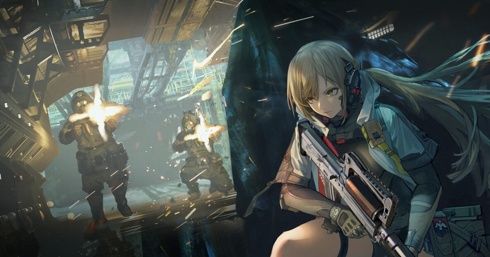

2026-10-29 · 玩法深读
10 月 19 日，《少女前线 2：追放》实装了全新赛季玩法「危区探遗」。10 月 17 日的直播里，制作人羽中已经亲自上手试玩演示过。 这套玩法最大的变化不是加了什么，而是拿掉了什么：探索过程中不再切进战棋，改成第三人称俯视角即时射击。 10 月 29 日，开发团队接受采访把设计过程讲了一遍——而他们讲出来的理由，比玩法本身有意思得多。

你编入任意三名已解锁的人形组成小队进图，在红区、黄区边缘搜集物资、跟生骸或瓦良格帮交火、完成任务，最后从撤离点撤出去。 局内可以随时切换前台角色，每个人形对应一种枪种和一套技能，等于同时带着三把枪、三个技能进图。 目前可用的是闪电（防卫·榴弹）、寇尔芙（支援·手枪·持续回血）、莱娅（火力·冲锋枪）、维普雷（霰弹枪）、玛奇朵（狙击枪）五位。
资源部分做得相当扎实。搜集到的物资分投掷物、配件、弹药、道具素材，还有带「钻石」标记的高价值物资；每次进图前要自己配护甲、弹药和消耗品，而不同人形吃的是对应枪种的子弹——编队时弹药配比得提前算好，打到一半弹尽粮绝会直接抬高你撤不出去的风险。
两套系统值得单独点名。一是 24 小时制的天气与时间系统：下雨降低行走速度、加快心智值消耗，但雨水会刷出更多物资；夜晚刷新更多成群结队的敌人，战利品价值与种类也更高。 二是「探遗深度」等级：靠完成任务积累提升，深度上去之后解锁更多任务与功能，可搜索的战利品更值钱，敌人等级也一起涨——这是一个把「风险」和「收益」绑在同一根旋钮上的设计，很塔科夫。
失败的处理也有讲究：每次探索有时间上限，即血量条右侧的「心智消耗」，心智归零即失败；遭遇强敌战败，本次探索同样失败，但携带和收集的物资会留在原地等待回收。 赛季制，S1「灰铁猎期」持续三个月。
很多人把「危区探遗」理解成《少前 2》的一次玩法加法。团队自己的说法恰好相反。 这是他们第三次尝试把搜打撤塞进这个游戏，前两次都失败了——而失败的原因被说得很直白：探索过程中遭遇敌人后切换至战棋，会「频繁打断游戏节奏」。
第一次是「边界推进」：地图探索选路线，遇敌进战棋。初衷是对的——让玩家辛辛苦苦养的人形能在新场景里发挥作用，养成成果有地方兑现。 但两个品类的底层节拍根本不是一回事：搜打撤要的是高风险高收益、随时判断「打还是躲、什么时候撤」，是即时的；战棋要的是行动顺序、技能组合、地形利用，是回合的、可推演的。 把它们缝在一起，你每次撞见敌人都要停一次、切一次、摆一次——探索刚积累起来的紧张感，每次遇敌都被清零。
为了保证战棋的策略性，接战位置和地形必须提前安排好，结果就是玩家熟悉关卡之后，探索过程里的「变化」变得极其有限。 团队还提到开服初期试过加入互动性较强的场景解谜，但玩家只要绕开敌人视野就能轻松完成探索，缺少交战应有的紧张感。 第二次的「异位冲突」继续在战棋侧做修补，依然没解决那个切换断点。
第三次，他们做了个很干脆的决定：把战棋从新模式里整个去掉。 团队的说法是「如果希望充分体现搜打撤的战斗紧张感、路线规划和资源取舍，就需要让探索与战斗之间的衔接更加直接」。 翻译过来就是：我们从三次尝试里学到的答案是——这两件事不能共存于同一次探索里。 一句「一年一个大玩法」听起来是产能宣言，其实是一份三次失败的结项报告。
第一句：为什么是 2.5D 俯视角，不是第三人称肩射。 团队给的理由很工程化——「综合考虑现有美术资产的改造成本，以及不同视角与搜打撤机制的适配程度」。 这句话拆开看相当诚实：人形是给俯视棋盘做的，改成肩射视角等于所有动作、镜头、掩护逻辑全部重做。 2.5D 是在「资产可复用」和「能射击」之间取的最大公约数。 注意这里的因果方向是反的：通常我们说玩法决定资产，这次是资产决定了玩法形态。 这不是缺点——在长期运营的二游里这是唯一现实的路——但它确实意味着这套玩法的上限从立项那天就被既有资产划了一道线。
第二句：「与其看起来『对』，不如玩起来『爽』」。 这是团队对新模式的要求，也是一句放弃宣言。 《少前 2》主玩法的核心体验是「计算」——你在行动之前把结果算出来；危区探遗的核心体验是「反应」——你在行动之中随时调整。 制作组明确说要把战棋里的计算、推演和沙盘体验从新模式剥离。 同一个角色因此要在两套语境里活成两个人：闪电的榴弹在战棋里是「覆盖几个格子」的几何问题，在危区探遗里是「一个范围伤害 + 防御增益」的即时决策。名字没变，意义全变了。
第三句：「直接采用较高强度的资源损失机制，未必符合所有玩家的习惯」。 这句是全篇最要命的。 搜打撤的灵魂是「失去」，二游的灵魂是「不失去」。 前者靠损失制造紧张，后者靠积累制造黏性，两者在根上冲突。 团队的取舍很清楚：保留物资收集、路线规划、撤离这些壳，但加入物资找回、免费战备补给、按探遗深度分级难度三道缓冲。 低难度下敌人强度、物资分布、场景压力都宽松，先让你把它当射击游戏玩，再慢慢熟悉规则。
这个取舍我们理解，但必须指出代价：它把塔科夫的紧张感做成了一种「氛围」——可以退出、可以找回、可以降级——而不是一套机制。 当你知道打输了物资还能捡回来、下把还有免费补给，那一瞬间的「心跳」是真的还是演的，玩家心里清楚。 这是二游做搜打撤绕不过去的天花板，不是《少前 2》的问题。
最后一层是产能的现实。团队承认新模式「并非简单复用原有战棋资源」：场景要重新生产，人形动作要按即时射击重新融合，局内特效、粒子、性能参数、调色渲染都要换新标准，而且两套战斗系统在技术方案上差异明显，后续还需要专门的研发支持。 团队自己也把风险说出来了——怕的是「内容消耗枯竭之后变得无聊，沦为为了登录拿奖励而上线的玩法」。 「一年一个大玩法」是一句漂亮的口号，代价是双份的维护成本，而这句话能不能兑现，要看第二个赛季。
我们的观察：玩家已经在做的事，比官方的规划更能说明这套机制的成色。 上线十天，社区里已经跑出了三类自发内容：低投入「跑刀」路线整理、烟雾弹的战术用法研究、以及对「Y 轴瞄准」的争论。 后者很有意思——有玩家发现子弹会从小怪头顶飞过去，有人觉得这是坏设计，也有人指出这让你能越过眼前低威胁目标先打后排的高威胁敌人，只是官方应该给一个开关。 一个模式刚上线十天，玩家就开始争论该不该给一个设置项，说明它的操作深度是真的。
我们的观点：真正的隐患不在设计，在端口。 社区里一条很实在的反馈是：PC 端键鼠可以画质拉满 1080P 流畅运行，快捷键能自定义，后坐力和准星跟手感都不错；移动端只能全最低画质，而且瞄准射击「非常灾难」——在没有辅助瞄准的前提下，N3 以上难度几乎打不了。 而两边的难度是一样的。 一个以手机为主要载体的二游，把「操作精度决定生死」的玩法做成双端同难度，这是个还没被解决的矛盾。 如果三周内移动端不加辅助瞄准或降低难度系数，这套玩法会被自己的载体拖住。
| 作品 | 对手是谁 | 失败损失 | 局外养成是否进局 | 有没有兜底 |
|---|---|---|---|---|
| 逃离塔科夫 | 真人 | 全部装备损失 | 进，但不保值 | 无，且以此为卖点 |
| 暗区突围 / 三角洲行动 | 真人 + AI | 全部损失，保险部分返还 | 进 | 保险机制 |
| 逃离鸭科夫 | AI（PvE） | 部分损失 | 轻养成 | 有，难度可调 |
| 少前 2 · 危区探遗 | AI（纯 PvE） | 物资留在原地可找回 | 进——人形即战力 | 找回 + 免费补给 + 深度分级 |
我们的案例对比：把这张表竖着读，能看到一条很清楚的轨迹：从塔科夫到危区探遗，被一步步换掉的是「失去」的重量。 塔科夫的紧张来自「这些装备是我攒了三天的，没了就没了」；鸭科夫把对手换成 AI，紧张感已经降了一档；危区探遗再换掉损失本身，紧张感只能从别处补—— 它补的是「养成」：你带上的是你花了几个月养的人形，而她们一旦心智归零，这一趟白跑。 这是二游唯一拿得出手的等价物，也确实是聪明的替换。但它有个前提：你得真的在乎这些人形。对新玩家来说，这个前提在第一天并不成立。
我们的实验：建议做一个很简单的对照测试——用同一个角色（比如闪电）分别打一次战棋关卡和一次危区探遗，记录你在哪一边「做决定的时刻」更多。 战棋里决策发生在行动之前：先算，后动，一动就不可改；危区探遗里决策发生在行动之中：边打边调，随时可改。 如果两者给你的是同一种满足感，说明这次转型没换来新东西，只是换了层皮；如果给你的是两种——一边是「我算对了」的智性快感，一边是「我反应过来了」的肌肉快感——那「两套玩法长期并行」就不是话术，而是真的各自成立。 第二个观察点更适合验证产能：S1 的三个月里，第二个月的地图和事件有没有变化。赛季制最怕的是第一个月新鲜、第二个月重复、第三个月只剩签到。
我们的评分：转型勇气 8.6／长期产能风险 6.8 → 综合 7.8。 给到 8.6 是因为在一款运营两年、以战棋为核心卖点的二游上，把核心玩法从新内容里整个拿掉，这个决定需要的勇气远比「加一个大玩法」大—— 尤其是他们已经在这条路上失败了两次，第三次不是继续修，而是承认前两次的前提错了。 扣到 6.8 是因为产能这道算术题太硬：场景重做、动作重融、两套战斗系统各自维护，还要按赛季节奏稳定产出。 团队自己都把「内容枯竭后沦为签到玩法」这个风险说出口了，说明他们清楚，但清楚不等于解决。
分三类玩家说：
最后说一句我们最想留下的。「与其看起来『对』，不如玩起来『爽』」——这句话从一个做战棋起家的团队嘴里说出来，是相当重的一次自我否定。 它承认了过去两年他们追求的那种沙盘推演美学，在这套玩法里是错的。 一个长期运营的项目愿意在新内容里否定自己的核心卖点，比多做几个活动稀有得多。 至于代价，要等 S2 那张地图才能看出来。赛季制的真正考验从来不是第一个月，是第二个月。